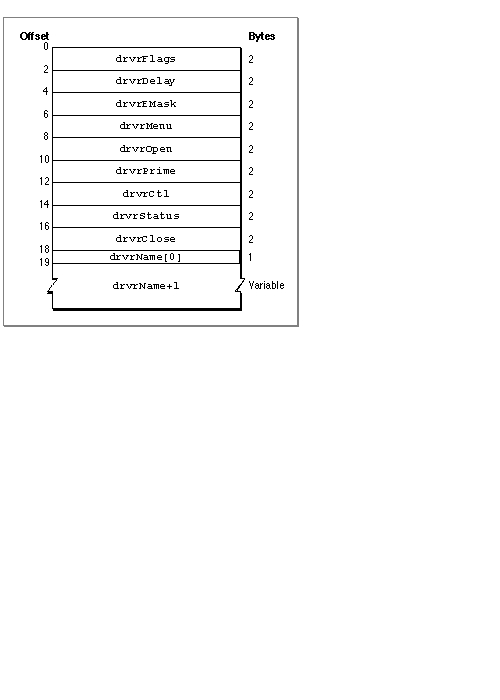

Legacy Document
Important: The information in this document is obsolete and should not be used for new development.
Important: The information in this document is obsolete and should not be used for new development.


Writing a Device Driver
This section shows you how to write a basic device driver--one that can respond to Device Manager requests. Although you will need to write some assembly-language interface code, you can write your device driver routines in a high-level language.Before you decide to write your own device driver, you should consider whether your task can be more easily accomplished using one of the standard Macintosh drivers described in this book or other Inside Macintosh volumes. In general, you should consider writing a device driver only if your hardware device or system service needs to be accessed at unpredictable times or by more than one application.
For example, if you develop a new output device that you want to make available to any application, you might need to write a custom driver. On the other hand, if your product is a specialized device that can only be used by your application, it may be easier to control the device using private code within your application.
This section describes how to
- create a driver resource
- write the code in your driver resource so that it responds appropriately to Device Manager requests
- handle the special requirements of asynchronous I/O
- install and initialize your driver
Creating a Driver Resource
You will probably want to store your device driver in a driver resource, although if you are writing a driver for a slot device, you might want to store your driver in an sResource data structure in the declaration ROM of the expansion card. See the chapter "Slot Manager" in this book for information about sResource data structures.Storing your driver in a driver resource allows the Device Manager to load your driver code into memory and install a device control entry for your driver in the unit table. Like all resources, your driver resource has a resource type, a resource ID, a resource name, and resource attributes.
A driver resource has two parts:
- The resource type must be
'DRVR'if you plan to use the Device Manager to load your driver into memory. If you write your own routine to load the driver, you can choose a different resource type.- The resource ID determines where in the unit table the Device Manager installs the driver's device control entry. Because you must choose the resource ID when creating your driver resource, you cannot know which unit numbers are available until you open your driver. Therefore, your driver-opening routine must find an empty location in the unit table and change the resource ID accordingly. "Installing a Device Driver" on page 1-38 discusses appropriate values for the resource ID.
- The resource name should be the same as the driver name because the Device Manager calls
GetNamedResourceusing this name if it can't find the driver in the unit table. A driver name consists of a period (.) followed by any sequence of 1 to 255 printing characters. The Device Manager ignores case (but not diacritical marks) when comparing names.- The resource attributes of your driver resource depend on your driver. A typical driver might have these attributes: locked, since most drivers contain code that is called at interrupt time; in the system heap, so that the driver exists over launches of applications; and preloaded, which makes resource loading slightly more efficient.
The driver header contains a few words of flags and other data, offsets to the driver's routines, and an optional driver name. Figure 1-9 shows the format of a driver header.
- a driver header that contains information about the driver
- the routines that do the work of the driver

The elements of the driver header are:
See the section "Entering and Exiting From Driver Routines" on page 1-29 for more information about the routine offsets.
- Element Description
drvrFlags- Flags in the high-order byte of this field specify certain characteristics of the driver. These flags are copied to the high-order byte of the
dCtlFlagsfield of the device control entry when the driver is opened. You can use the constants shown in Listing 1-6 to set or test the flags in this field.
Name Bit Meaning dReadEnable8 Set if the driver can respond to read requests. dWritEnable9 Set if the driver can respond to write requests. dCtlEnable10 Set if the driver can respond to control requests. dStatEnable 11 Set if the driver can respond to status requests. dNeedGoodbye 12 Set if the driver needs to be called before the application heap is reinitialized. dNeedTime 13 Set if the driver needs time for performing periodic tasks. dNeedLock 14 Set if the driver needs to be locked in memory as soon as it is opened. drvrDelay- If the
dNeedTimeflag is set, this field contains the requested number of ticks between periodic actions. This value is approximate and should not be used as a timing reference.drvrEMask- Used only by desk accessories, this field contains an event mask. See "Writing a Desk Accessory" on page 1-49 for information about this field.
drvrMenu- Used only by desk accessories, this field contains a menu ID. See "Writing a Desk Accessory" on page 1-49 for more information.
drvrOpen- The offset of the driver's open routine, relative to offset 0 of the driver header.
drvrPrime- The offset of the driver's prime routine.
drvrCtl- The offset of the driver's control routine.
drvrStatus- The offset of the driver's status routine.
drvrClose- The offset of the driver's close routine.
drvrName- A Pascal string containing the driver's name, up to 255 characters.
Listing 1-6 Driver flag constants
- Note
- Your driver routines, which follow the driver header, must be aligned on a word boundary.

enum { /* flags used in the driver header and device control entry */ dNeedLockMask = 0x4000, /* set if driver must be locked in memory as soon as it's opened */ dNeedTimeMask = 0x2000, /* set if driver needs time for performing periodic tasks */ dNeedGoodByeMask = 0x1000, /* set if driver needs to be called before the application heap is initialized */ dStatEnableMask = 0x0800, /* set if driver responds to status requests */ dCtlEnableMask = 0x0400, /* set if driver responds to control requests */ dWritEnableMask = 0x0200, /* set if driver responds to write requests */ dReadEnableMask = 0x0100, /* set if driver responds to read requests */ };ThedReadEnable,dWritEnable,dCtlEnable, anddStatEnableflags indicate which Device Manager requests the device driver can respond to. The next section, "Responding to the Device Manager," describes these routines in detail.Drivers in the application heap are lost when the heap is reinitialized. If you set the
dNeedGoodbyeflag, the Device Manager calls your driver before the heap is reinitialized so that you can perform any clean-up actions. See "Writing Control and Status Routines," beginning on page 1-34, for information about using this flag.You set the
dNeedTimeflag if your device driver needs to perform some action periodically. For example, a network driver may want to poll its input buffer every 5 seconds to see if it has received any messages. The value of thedrvrDelayfield indicates how many ticks should pass between periodic actions. For example, a value of 0 in thedrvrDelayfield indicates that the action should happen as often as possible, a value of 1 means it should happen every sixtieth of a second, a value of 2 means at most every thirtieth of a second, and so on. Whether the action actually occurs this frequently depends on how often an application callsWaitNextEventorSystemTask. See "Writing Control and Status Routines," beginning on page 1-34, for information about using this flag.
You need to set the
- Note
- If you do not want your driver to depend on applications to call
WaitNextEventorSystemTask, you can perform actions periodically by installing a VBL task, a Deferred Task Manager task, a Time Manager task, or a Notification Manager task. For more information, see Inside Macintosh: Processes.dNeedLockflag if your device driver's code must be locked in memory. In particular, you need to set this flag in these two cases:
You can create your driver header in these ways:
- If any part of your driver's code can be called at interrupt time. Because the Operating System may perform memory management at interrupt time, your driver must be locked to prevent it from being moved.
- If your driver provides the Operating System with a pointer to any part of its code. For example, if your driver uses the Device Manager to call another driver, you might provide the Device Manager with a pointer to a completion routine. If that completion routine is in your driver code, your driver code must be locked. Otherwise, that pointer might not be valid when the Device Manager calls the completion routine.
Listing 1-7 An assembly-language driver header
- You can use a resource compiler. See "Resources" on page 1-89 for the Rez format of the driver resource.
- You can use the
DCinstruction, as shown in Listing 1-7, to position the header information directly in your assembly language code.
DHeader DFlags DC.W 0 ;set by MyDriverOpen DDelay DC.W 0 ;none DEMask DC.W 0 ;DA event mask DMenu DC.W 0 ;no menu DC.W DOpen - DHeader ;offset to Open DC.W DPrime - DHeader ;offset to Prime DC.W DControl - DHeader ;offset to Control DC.W DStatus - DHeader ;offset to Status DC.W DClose - DHeader ;offset to Close Name DC.B '.MYDRIVER' ;driver name ALIGN 2 ;word alignmentIn this example, thedrvrFlagsword is cleared to 0 because the flags are set by theMyDriverOpenfunction, shown in Listing 1-9 on page 1-32. This is an implementation decision--you can set the flags in the driver header or in your driver's open routine. ThedrvrDelayfield is set to 0 because this driver does not perform any periodic actions using theSystemTaskfunction. ThedrvrEMaskanddrvrMenufields are set to 0, as this driver is not a desk accessory. The next five fields contain offsets to the driver routines, defined in the next section, "Responding to the Device Manager." The header ends with the driver name and the word alignment directive.Responding to the Device Manager
The Device Manager calls a driver routine by setting up registers and jumping to the address indicated by the routine's offset in the driver header.
This interface requires you to use some assembly language when writing a driver. However, you can write your driver routines in a high-level language if you provide an assembly-language dispatching mechanism that acts as an interface between the Device Manager and your driver routines.
- Register A0 contains a pointer to the parameter block.
- Register A1 contains a pointer to the driver's device control entry.
The next few sections discuss how you can provide a dispatching routine and how you can implement your driver routines in a high-level language.
Entering and Exiting From Driver Routines
Listing 1-8 shows an assembly-language dispatching routine that you can use as an interface between the Device Manager and your high-level language driver routines. This example properly handles synchronous, asynchronous, and immediate requests, as well as the special cases of open, close, andKillIO.Listing 1-8 An assembly-language dispatching routine
DOpen MOVEM.L A0-A1,-(SP) ;save ParmBlkPtr, DCtlPtr across function call MOVEM.L A0-A1,-(SP) ;push ParmBlkPtr, DCtlPtr for C BSR MyDriverOpen ;call linked C function ADDQ #8,SP ;clean up the stack MOVEM.L (SP)+,A0-A1 ;restore ParmBlkPtr, DCtlPtr RTS ;open is always immediate, must return via RTS DPrime MOVEM.L A0-A1,-(SP) ;save ParmBlkPtr, DCtlPtr across function call MOVEM.L A0-A1,-(SP) ;push ParmBlkPtr, DCtlPtr for C BSR MyDriverPrime ;call linked C function ADDQ #8,SP ;clean up the stack MOVEM.L (SP)+,A0-A1 ;restore ParmBlkPtr, DCtlPtr BRA.B IOReturn DControl MOVEM.L A0-A1,-(SP) ;save ParmBlkPtr, DCtlPtr across function call MOVEM.L A0-A1,-(SP) ;push ParmBlkPtr, DCtlPtr for C BSR MyDriverControl;call linked C function ADDQ #8,SP ;clean up the stack MOVEM.L (SP)+,A0-A1 ;restore ParmBlkPtr, DCtlPtr CMPI.W #killCode,csCode(A0) ;test for KillIO call (special case) BNE.B IOReturn RTS ;KillIO must always return via RTS DStatus MOVEM.L A0-A1,-(SP) ;save ParmBlkPtr, DCtlPtr across function call MOVEM.L A0-A1,-(SP) ;push ParmBlkPtr, DCtlPtr for C BSR MyDriverStatus ;call linked C function ADDQ #8,SP ;clean up the stack MOVEM.L (SP)+,A0-A1 ;restore ParmBlkPtr, DCtlPtr IOReturn MOVE.W ioTrap(A0),D1 BTST #noQueueBit,D1 ;immediate calls are not queued, and must RTS BEQ.B @Queued ;branch if queued @NotQueued TST.W D0 ;test asynchronous return result BLE.B @ImmedRTS ;result must be \xBE0 CLR.W D0 ;"in progress" result (> 0) not passed back @ImmedRTS MOVE.W D0,ioResult(A0) ;for immediate calls you must explicitly ; place the result in the ioResult field RTS @Queued TST.W D0 ;test asynchronous return result BLE.B @MyIODone ;I/O is complete if result \xBE 0 CLR.W D0 ;"in progress" result (> 0) not passed back RTS @MyIODone MOVE.L JIODone,-(SP) ;push IODone jump vector onto stack RTS DClose MOVEM.L A0-A1,-(SP) ;save ParmBlkPtr, DCtlPtr across function call MOVEM.L A0-A1,-(SP) ;push ParmBlkPtr, DCtlPtr for C BSR MyDriverClose ;call linked C function ADDQ #8,SP ;clean up the stack MOVEM.L (SP)+,A0-A1 ;restore ParmBlkPtr, DCtlPtr RTS ;close is always immediate, must return via RTSIn this example,DOpen,DPrime,DControl,DStatus, andDCloseare the five entry points that the Device Manager locates using the offsets defined in the driver header. These in turn call the actual driver routines, which are written in C. The C functions return a result code if the I/O completed, or a positive value (usually 1) if the I/O is being handled asynchronously.When the driver routine returns, the dispatching routine removes the parameters from the stack, restores the A0 and A1 registers, and then returns control to the Device Manager in one of two ways:
To use this dispatching routine you would place it after the driver header in your assembly-language source file, and link it to your C-language driver routines. Listing 1-7 on page 1-28 shows the driver header. Sample driver routines are presented in the following sections.
- Calling the
IODoneroutine. This routine, described in detail on page 1-87, indicates to the Device Manager that the request is complete. The Device Manager removes the request from the I/O queue and calls the completion routine, if any. This is the normal method of returning from driver prime, control, and status routines.- Returning with an
RTSinstruction. Use this method when you do not want the Device Manager to remove the request from the I/O queue. There are three cases where theRTSinstruction should be used:
- Returning from an asynchronous request that is not yet complete. After your device driver begins an asynchronous operation, it should return control to the Device Manager with an
RTSinstruction. The device driver can regain control of the processor using an interrupt handler, VBL task, or other method, and jump toIODonewhen the request is complete.- Returning from an immediate request. Because the Device Manager does not queue immediate requests, they should always return with an
RTSinstruction.- Returning from open, close, and
KillIOrequests. These requests are never queued and should always return with anRTSinstruction.
Writing Open and Close Routines
You must provide both an open routine and a close routine for your device driver. The open routine should allocate any private storage your driver requires and place a handle to this storage in thedCtlStoragefield of the device control entry. After allocating memory, the open routine should perform any other preparation required by your driver.If your open routine installs an interrupt handler, you may want to store a pointer to the device control entry in private storage where it will be available for the interrupt handler. The section "Handling Asynchronous I/O" on page 1-37 discusses interrupt handling in more detail.
Listing 1-9 shows a sample open routine,
MyDriverOpen. This function begins by checking whether the driver is already open (by examining the contents of thedCtlStoragefield of the device control entry). If the driver is not already open, theMyDriverOpenfunction sets the appropriate flags in the device control entry and allocates memory in the system heap for private storage. The private storage of the driver in this example contains two fields,byteCountandlastErr, which store information about the last I/O function. The prime, control, and status routines described in the following sections use these fields.If the
MyDriverOpenfunction fails to allocate memory for private storage, it returns theopenErrresult code, which notifies the Device Manager that the driver did not open.Listing 1-9 Example driver open routine
struct MyDriverGlobals { short byteCount; short lastErr; }; typedef struct MyDriverGlobals MyDriverGlobals; typedef struct MyDriverGlobals *MyDriverGlobalsPtr, **MyDriverGlobalsHdl; OSErr MyDriverOpen(IOParamPtr pb, DCtlPtr dce) { if (dce->dCtlStorage == nil) { /* set up flags in the device control entry */ dce->dCtlFlags |= (dCtlEnableMask | dStatEnableMask | dWritEnableMask | dReadEnableMask | dNeedLockMask | dRAMBasedMask ); /* initialize dCtlStorage */ dce->dCtlStorage = NewHandleSysClear(sizeof(MyDriverGlobals)); if (dce->dCtlStorage == nil) return(openErr); else return(noErr); } else { /* the driver is already open */ return(noErr); } }The close routine must reverse the effects of the open routine by releasing any memory allocated by the driver, removing interrupt handlers, removing any VBL or Time Manager tasks, and replacing changed interrupt vectors. If the close routine cannot complete the close request, it should return theclosErrresult code and the driver should continue to operate normally.The Device Manager does not dispose of the device control entry when a driver is closed. If you want to save any information about the operational state of the driver until the next time the driver is opened, you can store a handle to the information in the
dCtlStoragefield of the device control entry.Listing 1-10 shows a sample close routine,
MyDriverClose. Because this device
driver does not need to store any information until the next time it is opened, theMyDriverClosefunction disposes of the private storage allocated byMyDriverOpen.Listing 1-10 Example driver close routine
OSErr MyDriverClose(IOParamPtr pb, DCtlPtr dce) { if (dce->dCtlStorage != nil) { DisposeHandle(dce->dCtlStorage); dce->dCtlStorage = nil; } return(noErr); }Writing a Prime Routine
The prime routine implements I/O requests. You can write your prime routine to execute synchronously or asynchronously. While a synchronous prime routine completes an entire I/O request before returning to the Device Manager, an asynchronous prime routine can begin an I/O transaction but return to the Device Manager before the request is complete. In this case, the I/O request continues to be executed, typically when more data is available, by other routines such as interrupt handlers or completion routines. "Handling Asynchronous I/O" on page 1-37 discusses how to complete an asynchronous prime routine.The Device Manager indicates whether it is requesting a read or a write operation by placing one of the following constants in the low-order byte of the
ioTrapfield of the parameter block:
enum { aRdCmd = 2, /* read operation requested */ aWrCmd = 3 /* write operation requested */ };The Device Manager includes two routines,FetchandStash, that provide low-level support for reading and writing characters to and from data buffers. Use of these routines is optional. "Writing and Installing Device Drivers," beginning on page 1-82, describes these functions.The
FetchandStashroutines update theioActCountfield of the parameter block. If you do not use these routines, you are responsible for updating this field.If your driver serves a block device, you should update the
dCtlPositionfield of the device control entry.Listing 1-11 shows a sample prime routine. This routine determines whether a read or write operation is being requested, then calls the appropriate function. The reading and writing functions, which are not shown here, would transfer the data to or from the hardware device.
Listing 1-11 Example driver prime routine
OSErr MyDriverPrime(IOParamPtr pb, DCtlPtr dce) { MyDriverGlobalsHdl dStore; short callType; long numBytes; short myErr; dStore = (MyDriverGlobalsHdl)dce->dCtlStorage; numBytes = pb->ioReqCount; callType = 0x00ff & pb->ioTrap; /* get the low byte */ switch (callType) { case aRdCmd: myErr = MyReadBytes(pb->ioBuffer, numBytes); break; case aWrCmd: myErr = MyWriteBytes(pb->ioBuffer, numBytes); break; } (*dStore)->byteCount = numBytes; /* save in private storage */ (*dStore)->lastErr = myErr; pb->ioActCount = numBytes; /* update parameter block field */ return(myErr); }After obtaining a handle to the device driver's private storage from the dCtlStorage field of the device control entry, theMyDriverPrimefunction examines the low-order byte of theioTrapfield of the parameter block to determine whether the Device Manager is requesting a read operation or a write operation.MyDriverPrimethen calls either theMyReadBytesorMyWriteBytesfunction to move the requested number of bytes to or from the buffer designated by the parameter block.The
MyDriverPrimefunction stores the result code and byte count in its private storage. These values will be used by the example control and status routines described in the next section. Finally,MyDriverPrimeupdates theioActCountfield of the parameter block and returns the result code.Writing Control and Status Routines
Control and status routines are usually used to send and receive driver-specific information. However, you can use these routines for any kind of data transfer as long as you implement the minimum functionality described in this section. Like the prime routine, the control and status routines that you write can execute synchronously or asynchronously.The Device Manager passes information to the control routine in the
csCodeandcsParamfields of the parameter block. ThecsCodefield specifies the type of control request and thecsParamfield contains any additional information. ThecsCodevalues
-32767 through 127 are reserved by Apple Computer, Inc. Within this range, the following constant values are defined for use by all device drivers:
Constant name Value Meaning killCode 1 KillIOrequestedgoodbye -1 Heap being reinitialized accRun 65 Time for periodic action When the Device Manager receives a
KillIOrequest, it removes every parameter block from the driver I/O queue. If your driver responds to any requests asynchronously, the part of your driver that completes asynchronous requests (for example, an interrupt handler) might expect the parameter block for the pending request to be at the head of the queue. The Device Manager notifies your driver ofKillIOrequests so that it can take the appropriate actions to stop work on the pending request. Your driver must return control to the Device Manager by means of anRTSinstruction and not by jumping to theIODoneroutine.If you set the
dNeedGoodbyeflag in thedrvrFlagsfield of the driver header (or thedCtlFlagsfield of the device control entry), the Device Manager will call your control routine with the valuegoodbyein thecsCodeparameter before the heap is reinitialized. You driver can respond by performing any clean-up actions necessary before heap reinitialization.If you set the
dNeedTimeflag in thedrvrFlagsfield of the driver header (or thedCtlFlagsfield of the device control entry), the Event Manager will periodically call your control routine with the valueaccRunin thecsCodeparameter. Because these calls are immediate, your driver must be reentrant to handle them properly. For more information about thedNeedTimeflag and periodic actions, see the description of the driver header, beginning on page 1-25.Your control routine must return the
controlErrresult code for anycsCodevalues that are not supported. You can define driver-specificcsCodevalues if necessary, as long as they are outside the range reserved by Apple Computer, Inc.Listing 1-12 shows a sample control routine,
MyDriverControl. This function interprets the driver-specificcsCodevalue ofkClearAllas a command to clear the information saved in the driver's private storage by theMyDriverPrimeroutine.Listing 1-12 Example driver control routine
OSErr MyDriverControl(CntrlParamPtr pb, DCtlPtr dce) { MyDriverGlobalsHdl dStore; dStore = (MyDriverGlobalsHdl)dce->dCtlStorage; switch (pb->csCode) { case kClearAll: (*dStore)->byteCount = 0; (*dStore)->lastErr = 0; return(noErr); default: /* always return controlErr for unknown csCode */ return(controlErr); } }Your status routine should work in a similar manner. The Device Manager uses thecsCodefield to specify the type of status information requested. The status routine should respond to whatever requests are appropriate for your driver and return the error codestatusErrfor any unsupportedcsCodevalue.The Device Manager interprets a status request with a
csCodevalue of 1 as a special case. When the Device Manager receives such a status request, it returns a handle to the driver's device control entry. Your driver's status routine never sees this request.Listing 1-13 shows a sample status routine,
MyDriverStatus, that implements two driver-specific status requests,kByteCountandkLastErr. WhenMyDriverStatusreceives one of these requests, it returns the byte count or error code values saved in private storage by theMyDriverPrimeroutine.MyDriverStatusreturns this information in thecsParamfield.Listing 1-13 Example driver status routine
OSErr MyDriverStatus(CntrlParamPtr pb, DCtlPtr dce) { MyDriverGlobalsHdl dStore; dStore = (MyDriverGlobalsHdl)dce->dCtlStorage; switch (pb->csCode) { case kByteCount: pb->csParam[0] = (*dStore)->byteCount; return(noErr); case kLastErr: pb->csParam[0] = (*dStore)->lastErr; return(noErr); default: /* always return statusErr for unknown csCode */ return(statusErr); } }Handling Asynchronous I/O
If you design any of your driver routines to execute asynchronously, you must provide a mechanism for your driver to complete the requests. Some examples of routines that you might use are:
If your driver serves a device on a NuBus
- Completion routines. Your driver routine could call another driver to start the data transfer. In this case, you can provide that driver with a completion routine. When the other driver completes the request, the Device Manager executes the completion routine. In the completion routine, you could call the other driver again to execute the next part of the I/O operation. When the entire operation is complete, the completion routine should return by calling the
IODoneroutine.- Interrupt handlers. If your driver serves a hardware device that generates interrupts, you can create an interrupt handler that responds to these interrupts. Your interrupt handler must clear the source of the interrupt and return as quickly as possible, while preserving all registers other than D0 through D3 and A0 through A3. For more information about interrupts and how to install an interrupt handler, see Inside Macintosh: Processes and Designing Cards and Drivers for the Macintosh Family, third edition.
- VBL, Time Manager, and Deferred Task Manager tasks. Installing any of these tasks ensures that your driver receives system time at some point in the future. During this time, you can check to see if the I/O operation is ready to continue.
\x81 expansion card, you might want to use slot interrupts to signal your driver. When a NuBus card device signals a slot interrupt, the CPU can quickly detect which card requested the interrupt service, but not which device on the card. To determine which device caused the interrupt, the system uses a polling procedure. Your driver should provide a polling routine that checks if the device it serves caused the current interrupt, and if so, calls the proper driver routine to handle the interrupt. The Slot Manager maintains a queue of these polling routines for each slot. Your driver can install an element in this queue using the Slot Manager function SIntInstall. You can remove a queue element with theSIntRemovefunction. See the chapter "Slot Manager" in this book for information about these functions.You should observe these guidelines when writing or using asynchronous routines:
- Once you pass a parameter block to an asynchronous routine it is out of your control. You should not examine or change the parameter block until your completion routine is called because you have no way of knowing the state of the parameter block.
- Do not dispose of or reuse a parameter block until the asynchronous request is completed. For example, if you declare the parameter block as a local variable, your function cannot return until the request is complete because local variables are allocated on the stack and released when a function returns.
- Use a completion routine to determine when an asynchronous routine has completed, rather than polling the
ioResultfield of the parameter block. Polling theioResultfield is not efficient and defeats the purpose of asynchronous operation.
Installing a Device Driver
There are a variety of ways to install a device driver, depending on where the driver code is stored and how much control you want over the installation process.
If you store your driver in a resource of type
- You can store the device driver in a resource within an application and have the application install the driver.
- You can store the device driver, and the code to install it, in a system extension file. See the chapter "Start Manager" in Inside Macintosh: Operating System Utilities for information about creating system extensions.
- You can store the device driver in the declaration ROM of an expansion card. Slot device drivers can be designed to load automatically at startup, or you can use the Slot Manager
SGetDriverfunction to load the driver into memory. Refer to Designing Cards and Drivers for the Macintosh Family, third edition, for information about writing and installing slot device drivers.
'DRVR'you can use theOpenDriverorPBOpenfunctions to install and open your driver. If you need more control over the installation process, you can use theDriverInstallfunction to create the device control entry and add it to the unit table, or you can create the device control entry yourself, install it in the unit table, and then useOpenDriverorPBOpento open the driver. If the driver is already installed in the unit table,OpenDriverandPBOpensimply call the driver's open routine and return the driver reference number.If you want to use the
OpenDriverfunction to install your driver, you are responsible for examining the unit table and changing your driver resource ID so that theOpenDriverfunction installs your driver in an empty location in the unit table. If the handle at a given unit number isnil, there is no device control entry installed in that position. You can install your device control entry in any empty location in the unit table that is not listed as reserved by Apple Computer, Inc. Table 1-2 summarizes the unit numbers reserved for specific purposes.Listing 1-14 shows a method of searching the unit table for an appropriate location to install your driver. The
MyOpenDriverfunction in Listing 1-1 on page 1-18 calls this function and then uses theOpenDriverfunction to install and open the device driver.Listing 1-14 Finding space in the unit table
short MyFindSpaceInUnitTable(void); { Ptr curUTableBase, newUTableBase; short curUTableEntries, newUTableEntries; short refNum, unitNum; /* get current unit table values from low memory globals */ curUTableEntries = *(short*)UnitNtryCnt; curUTableBase = *(Ptr*)UTableBase; /* search for empty space in the current unit table */ for ( unitNum = curUTableEntries - 1; unitNum >= 48; /* lowest available unit number */ unitNum-- ) { refNum = ~(unitNum); if (GetDCtlEntry(refNum) == nil) return(unitNum); /* found a space */ } /* no space in the current table, so make a new one */ /* increase the size of the table by 16 (an arbitrary value) */ newUTableEntries = curUTableEntries + 16; /* allocate space for the new table */ newUTableBase = NewPtrSysClear((long)newUTableEntries * sizeof(Handle)); if (newUTableBase == nil) return(memErr); /* copy the old table to the new table */ BlockMove(curUTableBase, newUTableBase, (long)curUTableEntries * sizeof(Handle)); /* set the new unit table values in low memory */ *(Ptr*)UTableBase = newUTableBase; *(short*)UnitNtryCnt = newUTableEntries; unitNum = newUTableEntries - 1; return(unitNum); }Although rare, it is possible for the unit table to become completely full. If the MyFindSpaceInUnitTable function does not find an empty unit table entry, it creates a larger unit table and copies the contents of the old unit table into the new one. To avoid the need for every driver to create a larger table, this function increases the size of the table by 16 entries--a reasonable amount in most cases.The MyFindSpaceInUnitTable function does not need to disable interrupts when changing the values of the
UTableBaseandUnitNtryCntsystem global variables because both unit tables are valid and drivers are not opened or closed at interrupt time.Note that this function does not check for empty locations in the space reserved for desk accessories or SCSI drivers. You may wish to modify the function if you are installing one of these.
Subtopics
- Creating a Driver Resource
- Responding to the Device Manager
- Entering and Exiting From Driver Routines
- Writing Open and Close Routines
- Writing a Prime Routine
- Writing Control and Status Routines
- Handling Asynchronous I/O
- Installing a Device Driver